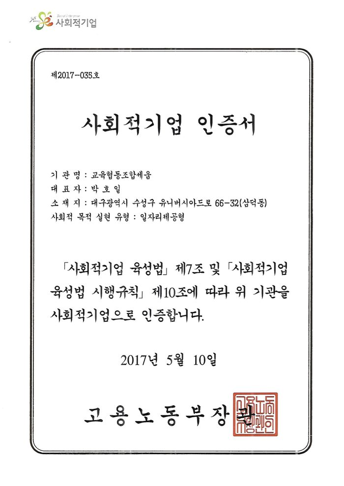
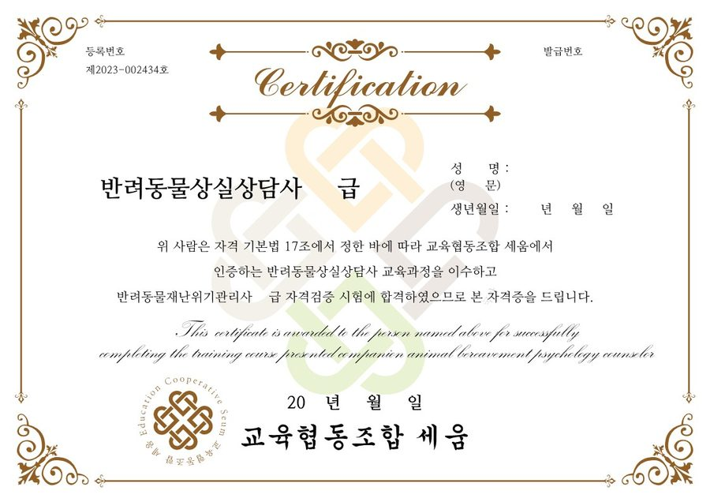
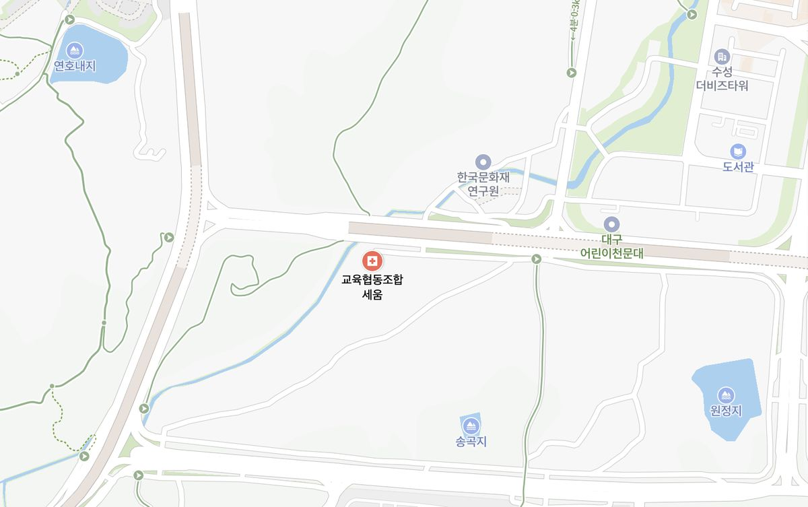
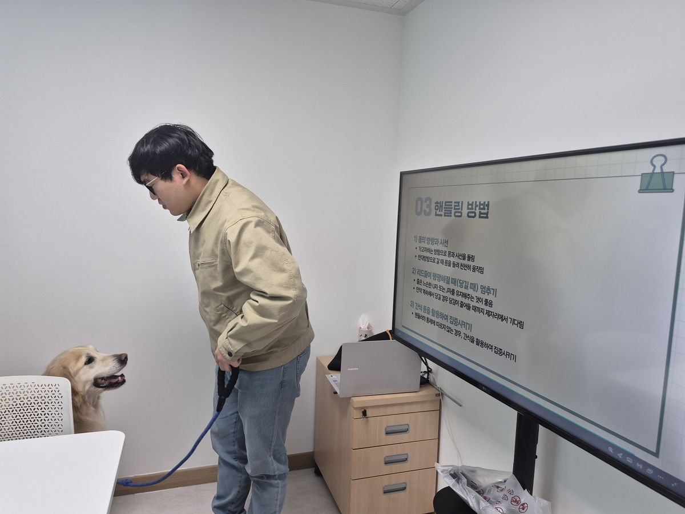
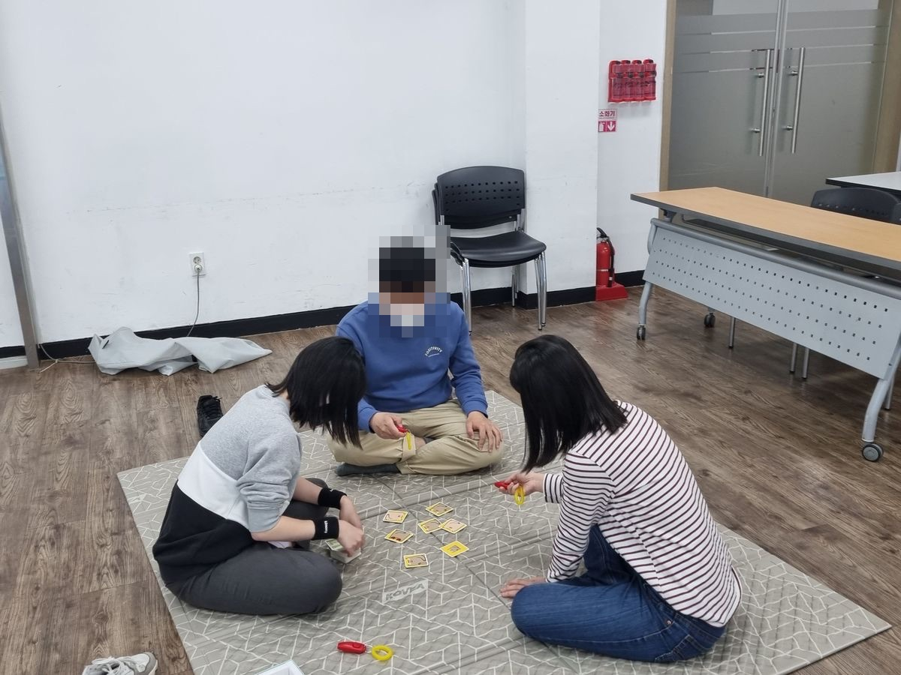
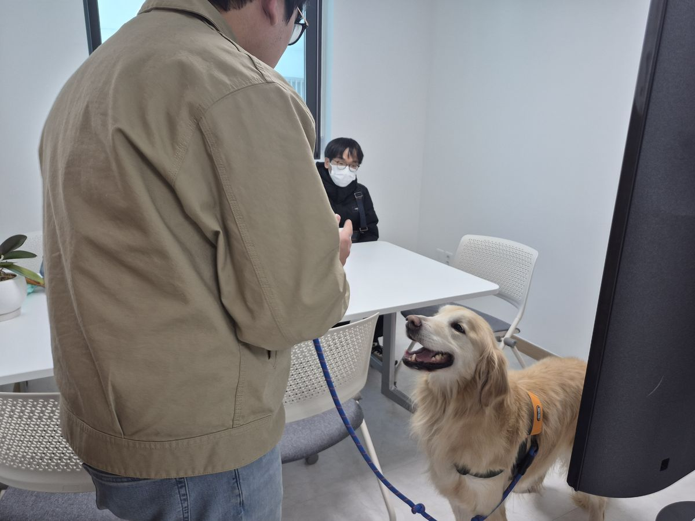
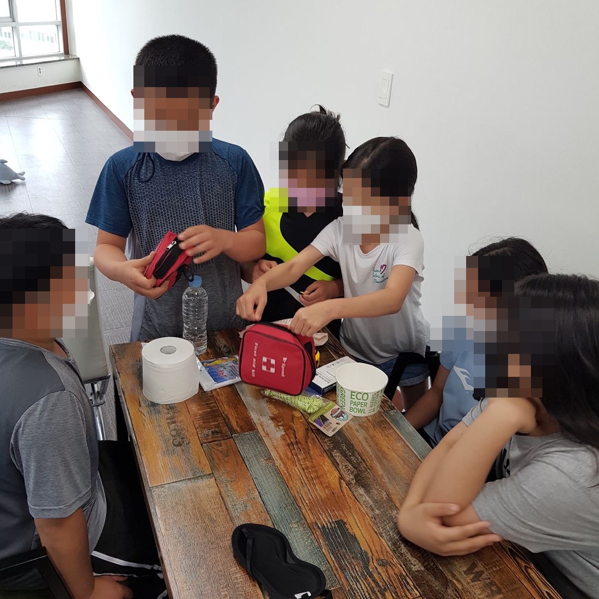
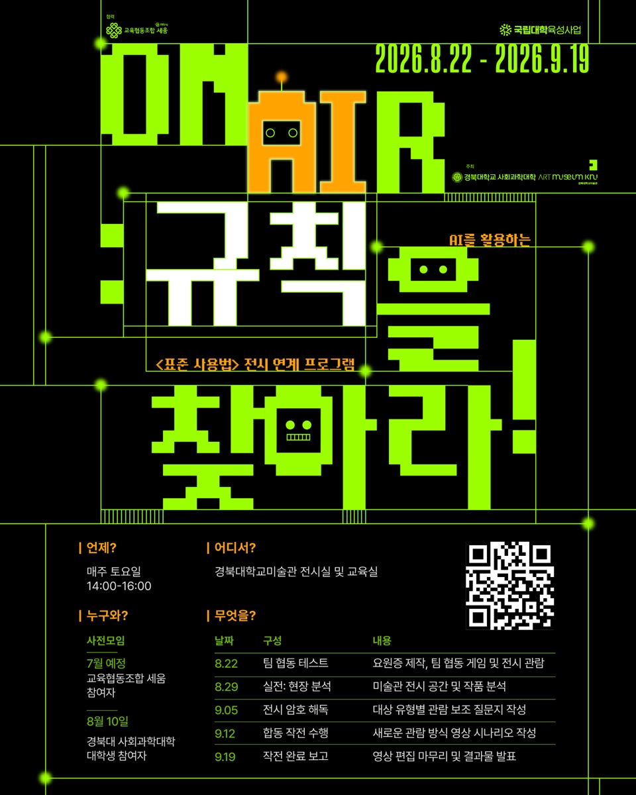

모집 예정2026년 하반기 · 일정 추후 안내
경계선지능(느린학습자)청년 진로자립지원사업 하반기 과정
만 15–34세 청년 · 12주 과정참가비 별도안내(지원사업 연계 여부에 따라 다르게 적용)
자기이해에서 자립까지, 다섯 영역으로 함께합니다.
숫자가 아니라, 어떤 조건에서 잘하는지를 함께 봅니다.
자기이해에서 시작해 진로설계 · 직무교육 · 현장 일경험 · 자립까지 하나의 여정으로 함께합니다. 필요할 때는 현장 코치가 사업장에 함께 갑니다.
자세히 보기 →협동·연대·호혜라는 사회적경제의 기본 가치를 배우고 활동으로 경험하는 교육
동물매개 활동과 반려동물 이해·돌봄 교육, 돌봄 루틴 직무교육
생존가방·동반 대피 등 반려동물과 함께하는 재난 대비 교육
배움과 일과 삶이 선순환하도록 지역 기업·기관과 협력
고용노동부 · 노사발전재단 · 대한상공회의소 · 한국가스공사
대구광역시 · 수성구청 · 대구광역시교육청
대구광역시사회적경제지원센터 · 대구광역시자원봉사센터
경북대학교 · 대구한의대학교 · 한동대학교
삼성SDS · SK실트론 · 하나금융그룹
전화 또는 메일로 알려주세요. 담당자가 2일 안에 답장드립니다.
세움은 2014년 대구에서 시작한 교육협동조합입니다. 청소년·청년, 특히 경계선지능 청년이 스스로 일상을 세워갈 수 있도록 교육으로 함께합니다.
세움을 찾아주셔서 고맙습니다. 우리는 2014년부터 대구에서 청소년·청년을 만나왔습니다. 그중에는 학교에서, 일터에서 “조금 느리다”는 말을 자주 들어온 청년들이 있습니다.
세움은 조건이 맞으면 해내는 청년을 봅니다. 알맞은 설명, 나에게 맞는 속도, 곁에 있는 사람 — 이 세 가지가 있으면 결과가 달라집니다. 그래서 강점을 먼저 찾고, 쉬운 말로 설명하고, 한 사람의 속도에 맞춰 반복합니다.
교육은 혼자 할 수 없습니다. 학교·지자체·기업·지역이 함께해 주셨기에 여기까지 왔습니다. 앞으로도 경계를 허물며 청년의 일상을 함께 세우겠습니다.
교육협동조합 세움 이사장 박호일
“경계를 허물어, 함께 일상을 세워갑니다.”
청소년과 청년이 자신을 둘러싼 경계를 허물고 사회의 당당한 구성원으로 성장하는 길을 함께 만듭니다. 개인의 약점을 메우는 대신 강점에서 출발하는 배움을 설계하고, 배움과 일과 삶이 선순환하는 지역생태계를 함께 만들어 갑니다.
무엇을 잘하는지, 어떤 도움이 있으면 더 잘되는지부터 함께 봅니다. 강점에서 출발해 갈 수 있는 길을 그립니다.
청년의 속도를 아는 기업에서 실제로 일해 봅니다. 필요할 때 현장 코치가 사업장에 함께 갑니다.
느린학습자 눈높이에 맞춘 ‘슬로우’ 교육 콘텐츠와 노동인권 세이프티 툴킷을 개발합니다.
| 연도 | 내용 | 기관 |
|---|---|---|
| 2015 | 예비사회적기업 지정 | — |
| 2017 | 사회적기업 인증 | 고용노동부 |
| 2021–2025 | 사회적가치 측정 우수등급 5년 연속 | 한국사회적기업진흥원 |
| 2023 | 대구사회적경제 우수기업 | 대구광역시 |
| – | 기관 표창 (국회의원·시장) | 국회의원 김부겸 · 대구광역시장 |
| 2024 | 여성기업 확인 (2024–2027) · 중소기업(소기업) 확인 | 중소벤처기업부 |
| 운영 중 | 자체 민간자격증 5종 반려동물 재난위기관리사 · 동물교감상담사 · 반려동물안전관리사 · 진로코칭지도사 · 반려동물상실상담사 | 세움 |


청년센터·정신건강복지센터 등과 연계해 일상 회복을 함께합니다.
사업 담당자와 직무교육 제공자가 청년과 함께 과정을 설계합니다.
지역 기업, 구청 일자리 부서와 연결해 실제 일자리로 잇습니다.
대구광역시 주거복지센터·후원자와 협력해 자립의 기반을 넓힙니다.
집행위원회가 네 영역의 사업을 지원하고, 이사회가 자원 연계를 책임집니다. 협동조합으로서 조합원 총회를 통해 민주적으로 운영됩니다.

대구광역시 수성구 유니버시아드로 66-32
버스 403번 ‘삼덕동1’ 하차 후 도보 5분
지하철 2호선 ‘대공원역’ 3번 출구에서 도보 20분
평일 09:00 – 18:00 · 주말·공휴일 휴무
방문 전 전화로 알려주시면 더 편히 안내드립니다.세움은 개인의 약점을 메우는 대신 강점에서 출발하는 배움을 설계합니다. 자기이해에서 시작해 진로·직무·일경험·자립으로 이어지는 생애주기 맞춤형 교육을 제공합니다.
세움과 함께 나누고자 하는 고민이 있다면 편하게 문의주세요. 본인도, 가족도, 선생님도 괜찮습니다.
📞 053-795-2013
숫자가 아니라, 어떤 조건에서 잘하는지를 함께 봅니다.
경계선지능 청년은 장애인 지원과 일반 지원 사이에 놓여, 학교를 마치고 사회로 나가는 시기에 필요한 도움이 닿지 않는 경우가 많습니다. 세움은 그 사이를 잇습니다. 청년 한 사람 한 사람을 조정이 더해지면 다르게 해내는 사람으로 봅니다.

학교를 마치고 사회로 나가는 시기에 도움이 가장 많이 필요합니다. 그래서 한 사람에게 맞춘 지원이 핵심입니다.
청소년에서 청년으로 넘어가는, 효과가 가장 큰 시기에 바로 개입합니다.
모든 청년이 잘하는 것과 어려운 것이 다릅니다. 개인의 강점·속도·스타일에 맞는 직무를 함께 찾습니다.
작은 성공을 반복해서 경험하며 “할 수 있다”는 효능감을 키우는 구조를 만듭니다.
너무 어렵지도 쉽지도 않게 난이도를 조절해, 청년의 속도에 맞춰 안정적으로 나아갑니다.
반려동물 돌봄 · 행사보조 · 디지털 마케팅 · 사무보조 · 지역상점 지원 · 일상돌봄
청년 당사자 · 현장 전문가 · 부모 · 고용 파트너를 대상으로 욕구조사를 진행하고, 그 결과를 바탕으로 사업을 만듭니다.

경쟁이 아닌 협동으로, 함께 사는 방법을 배웁니다.
협동과 연대, 호혜와 나눔, 민주적 운영, 지역사회 기여 — 사회적경제의 기본 가치를 먼저 이해하고, 보드게임과 모의 협동조합 활동으로 함께 결정하고 함께 나누는 과정을 몸으로 익힙니다.
초·중·고 학급 단위 신청 · 청소년·청년 단체 신청동물과의 교감이, 사람을 돌보고 사람을 키웁니다.
동물매개 활동으로 마음을 여는 경험을 나누고, 반려동물 이해·돌봄 교육으로 책임 있게 돌보는 힘을 기릅니다. 돌봄 루틴을 익히는 직무교육으로도 이어집니다.
소그룹 활동 · 보호자·청년 대상

재난의 순간, 반려동물도 함께 대비합니다.
생존가방 준비와 동반 대피처럼, 위기 상황에서 반려동물과 보호자가 함께 안전할 수 있는 방법을 알기 쉽게 전합니다. 반려동물 재난돌봄을 지역의 자원봉사 자원으로 함께 만들어 갑니다.
지역 기관 협력 네트워크 기반 · 단체 신청배움과 일과 삶이 선순환하는 지역을 함께 만듭니다.
고용노동부·대구광역시의 지역생태계 활성화 사업(Job Bridge)에 참여해, 경계선지능 청년이 사회정착 기초과정부터 맞춤 직무교육과 일경험까지 밟아 갈 길을 지역 안에 놓습니다. 노동인권 교육으로 근로계약서 읽는 법, 부당한 상황에 말하는 법을 익히고, 느린학습자 눈높이의 ‘슬로우’ 콘텐츠와 세이프티 툴킷을 개발해 보급합니다.
본인, 보호자, 학교, 기관 모두 문의하실 수 있습니다. 전화나 메일로 알려주시면 2일 안에 답장드립니다.
2014년부터 진행한 사업과 협력을 연도별로 정리했습니다. 인증·표창 내역과 증빙 서류도 이 페이지에서 확인하실 수 있습니다.
사업 실적, 재무 요약, 사회적가치 측정 결과를 한 권에 담아 준비하고 있습니다.
📄 추후 제공 예정 준비되는 대로 이 자리에서 안내드립니다. 먼저 필요하시면 문의하기로 알려주세요.2019년 조합 안에서 시범 사업으로 시작한 실험을 2022년 공모사업으로 공식화했고, 해마다 모델을 개선해 왔습니다. 지금은 네 번째 버전을 운영하고 있습니다.
| 사업 분야 | 운영 과정 | 참여 인원 | 주요 협력 |
|---|---|---|---|
| 경계선지능(느린학습자)청년 진로자립지원사업 | 2과정 | 48명 | 고용노동부 · 지역 기업 |
| 사회적경제 교육 | 24학급 | 610명 | 대구시교육청 |
| 동물교감 교육 RE:Dog | 6기 | 36명 | 수성구 · 지역 학교 |
| 재난안전 교육 펫톡119 | 12회 | 340명 | 행정안전부 |
| 지역생태계 조성 | 4사업 | 기관 11곳 | 대구광역시 · 대학 |
연간 활동보고서는 현재 준비 중이라 요청을 받지 않고 있습니다. 나머지 자료는 버튼을 누르면 요청 메일의 제목과 내용이 채워집니다. 보내주시면 2일(평일 기준) 안에 회신드립니다. 목록에 없는 서류도 seum13@naver.com으로 편히 요청해 주세요.
교육 모집 공지, 현장 소식, 지금 진행 중인 프로젝트를 알려드립니다. 궁금한 점은 전화로도 편히 물어보세요.

경계선지능 청년 10명 모집 · 매주 토요일 5회 · 경북대학교미술관
2026년 8월 22일(토)까지 접수
경북대학교 미술관에서 8월 22일부터 5주 동안 열리는 전시 연계 프로그램에 함께할 청년 10명을 모집합니다.
전화나 메일로 알려주시면 모집 공지를 미리 보내드립니다. 기관 담당자 문의도 환영합니다.
교육을 받고 싶은 분, 보호자, 학교·기관·기업 담당자 모두 환영합니다. 전화와 메일 중 편한 방법으로 연락 주세요. 2일(평일 기준) 안에 답장드립니다.
전화가 편하시면 위의 번호로, 글로 남기고 싶으시면 아래에서 용건을 골라주세요. 평일 09:00–18:00에 받습니다.
용건을 고르면 메일 제목과 내용이 채워집니다
네이버 메일, 구글 메일, 내 컴퓨터 메일 프로그램 중에서 고르실 수 있습니다.
보내주신 개인정보는 문의 응대 목적으로만 사용하고, 답변이 끝나면 지체 없이 파기합니다.